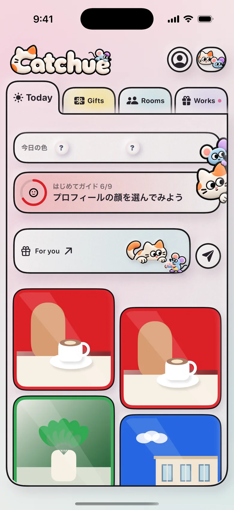
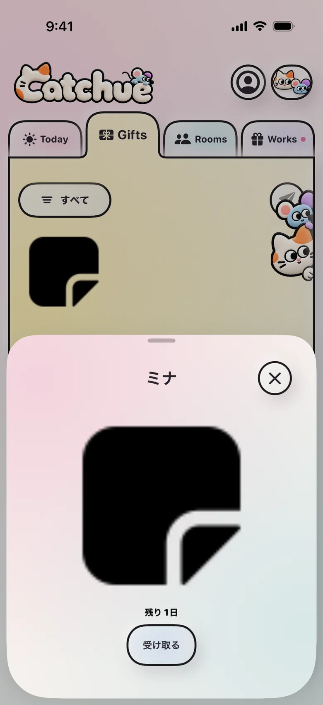
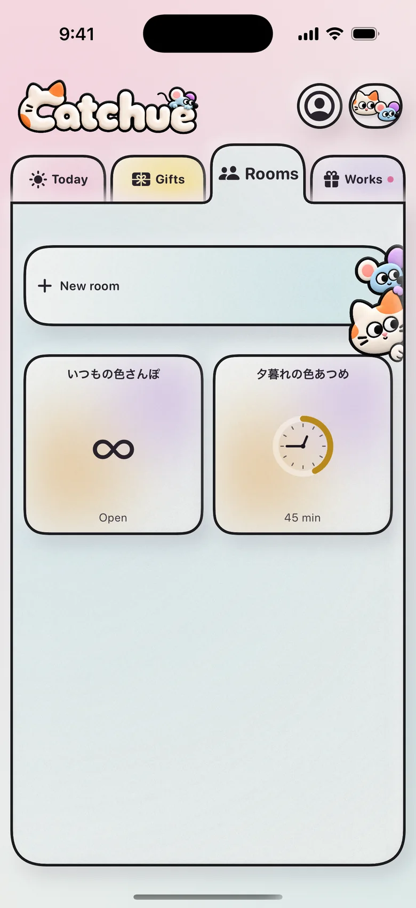
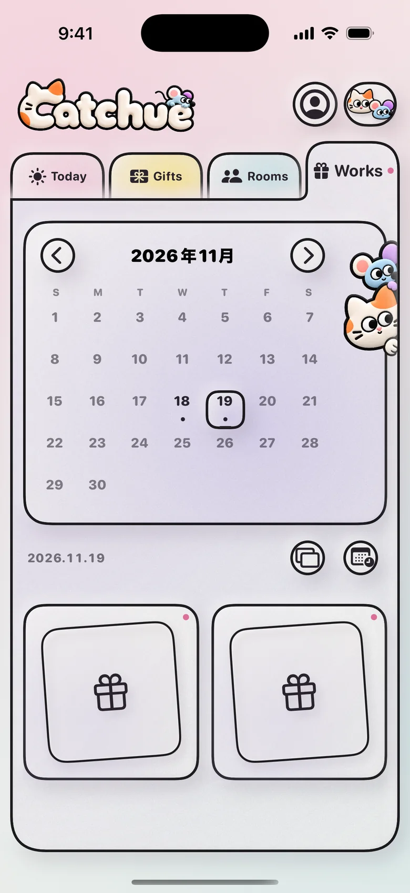
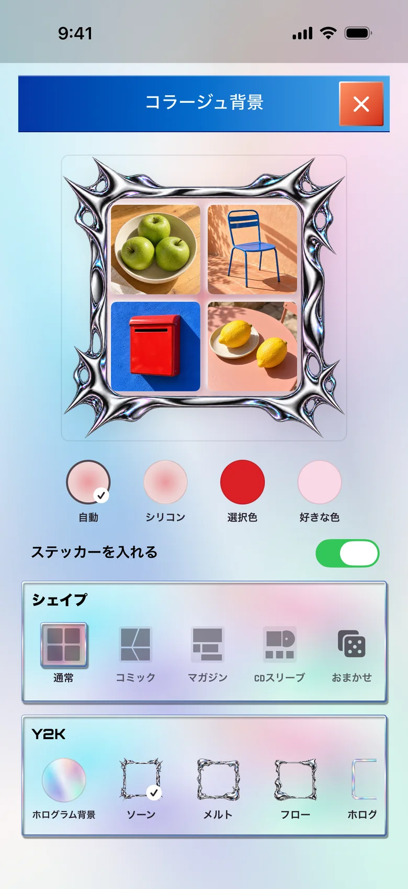

ステッカーハント
- 撮影画面でカメラのアイコンを選ぶと、ステッカーハントに。好きなものを撮ります。
- 切り抜きを確認して保存。ギャラリーの「Sticker」から選べます。
ステッカー機能は対応するテスト版で使えます。
ステッカーハント × PURI
お気に入りを撮って、自分だけのステッカーに。友達と撮ったプリクラに貼って、一緒に飾れます。
あそびかたを見るiPhoneアプリ · ただいまテスト中
ステッカー機能は対応するテスト版で使えます。

配信されたお題の色で撮って投稿。投稿すると、相互フレンドがその日に撮った写真を見られます。

作ったステッカーを相互フレンドに配布。受け取ったステッカーはギャラリーに入り、PURIなどで使えます。

ルームを作って友達を招待し、一緒に色を探します。撮影が終わると、参加者同士で写真を見られます。

Todayの自動コラージュは翌朝に、PURIの作品は撮影後に。届いた作品をカレンダーで振り返れます。

コラージュのシェイプや背景色を選んで、自分好みに。Y2Kスキンでは、リキッドメタルやホログラムの枠で飾れます。
撮影・編集はサインイン不要です。友達と共有するときはAppleでサインインします。